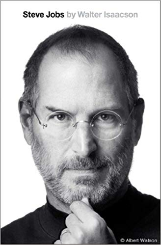

Luis Cabanillas
Tehcnical Program and Product Manager with solid experience in Software Development and enterprise solutions. Partnering with internal and external stakeholders to drive execution on end-to-end projects. Passionate on product development and translating business requirements into a strategy for technical solutions.
Experience
Technical Product Manager
Expedia Group
- Owning technical product delivery for multi-functional projects for multiple delivery teams while driving team velocity in the Lodging Partner Experience group.
- Collaborating across UX teams, product teams, technical partners, development teams, and other business partners to understand and document business requirements and design innovative technical solutions that create customer value.
- Leading and managing projects and programs, including active mitigation of risks to scope and schedule, status updates to leadership stakeholders and other teams, management of trade-offs to drive satisfactory completion of products and projects.
- Facilitating planning and governance activities with cross-functional teams. Driving daily delivery activities as well as regular cadences such as product discovery, daily stand-ups, retrospectives, product reviews and requirement grooming.
- Seeking and implementing continuous improvements into all project processes, including defining the appropriate methodology to motivate teams and track progress.
- Role duties: Own technical product discovery, release planning and software delivery. Collaborate with Product Managers, Business Analysts and SDE Leads. Serve as Scrum Master/PM. Identify and escalate risks.
Program Manager
Accenture
- Led the largest implementation of Microsoft Dynamics 365 in the world at Best Buy. Owning cross-functional software delivery for two teams as a Program and Project Manager, translating business requirements into systems solutions to enable Best Buy's 2020 vision.
- Led two Data Science teams at Cisco to implement statistical models and data visualizations to predict 80% of customer escalations related to product quality, driving proactive action and decision making from executives and business stakeholders.
- Led the Production Support team at T-Mobile for the myT-Mobile.com platform, driving incident response for critical and major issues at the application level. Drove the team to go from 100+ open defects to a historic-best of ~10 open defects consistently in the platform.
- Role duties: Own product discovery, release planning and software delivery. Collaborate with Product Managers, Business Analysts and SDE Leads. Serve as SDE Lead and/or Scrum Master/PM. Identify and escalate risks.
Product Development Manager
Tiempo Development
- Delivered high-impact features for our client WebPT.com, by enforcing constant customer value generation as well as continuous improvement in processes and engineering practices.
- Led Scrum ceremonies and Project Management duties for four teams simoultaneously with a total of 20 team members, two of the teams remotely located at Jalisco, Mexico.
- Led Release Planning for critical features and guided the teams through successful, on-time delivery.
- Role duties: Facilitate Scrum events and release planning. Own the cross-functional software delivery process and outcomes for four teams. Provide our clients with status on deliverables, risk management and escalations.
Software Development Engineering Lead
Global VoIP
- Led the architectural design and development, as well as performed hands-on coding work for a new web-based platform for a state property registration office..
- Optimized and increased the initial software delivery rate at a 4x factor based on automation and continuous improvement.
- Provided a data oriented solution to obtain insights on the Technical Support business in the company to improve customer satisfaction.
- Role duties: Hands-on software development. Technical coaching for team members. Architectural design for new systems. Project Management. SAP B1 support. IT Support.
Software Development Engineer
Freezecode Networks (now Lennken Group)
- Developed a variety of software products (banking, collaboration platforms and LMS), doing full-stack development and testing.
- Co-led the first project using agile methodologies within the company, delivering a financial control platform successfully and on-time for a state government office.
- Hands-on software development. Legacy systems maintenance. Bug fixes.
Software Development Engineer
Freelance
- Developed an alternative for small and medium sized business to adopt the then-new electronic invoicing scheme in Mexico
- Supported small and medium businesses to reduce costs by avoiding the need of replacing legacy systems
- Acquired field experience managing clients and deadlines before graduating from college.
- Hands-on software development. Legacy systems maintenance. Bug fixes.
Education & Certifications
Bachelor's Degree in Computer Systems Engineering
GPA: 9.8/10
Certifications
- Professional Scrum Master (PSM I). Scrum.org. February 2016.
- SAFe Agilist (SA). Scaled Agile Framework. March 2016.
- SAP Business One Consultant. SAP. June 2013
Skills
- Agile Software Development & Product Management (Scrum, Kanban & Lean)
- Program & Project Management
- DevOps
- Team Leadership
- Product Discovery, Product Management
- Release Planning, Release Management
Interests
I'm interested on learning more technoogies and experimenting with them hands-on. Since the time I started taking PM roles I kept learning programming languages, frameworks and platforms I didn't use as a software engineer but my current teams at the time [could] use for delivery. I try to learn one or two new technologies every now and then so I can keep up with the rapid changes in the industry. That's how I've learned Android, MEAN (MongoDB, ExpressJS, Angular, NodeJS), Docker, AWS, etc.
I'm always looking to work on projects that challenge my skills and the beliefs I've built in my career. I want to work on world-class platforms solving problems no one has solved before, building products that impact millions of people and make their experiences awesome.
My passion outside of technology is watching and following up on sports, mainly baseball. I'm also trying to build the habit of reading more non-technical books, that's a work-in-progress task.
Books I recommend
See my read shelf:
-

-

-

-

-

-

-

-

-

- 